library(haven)
library(dplyr)
library(knitr)
library(ggplot2)Regresyon Modelleri
paketler
Bilindiği üzere, t-testi, varyans analizi gibi ortalama farkları ile ilgili hipotez testleri değişkenler arasındaki ilişkiye dair herhangi bir bilgi vermemektedir.
Oysa serpilme diyagramlarına bakıldığında değişkenler arasında bir ilişki olabileceği hissedilebilmekte fakat bu tür analizlerle bu ilişkiler ortaya koyulamamaktadır.
Dolayısıyla değişkenler arasındaki ilişkinin şeklini, yönünü ve kuvvetini belirleyebilmemiz için yeni metotlara ihtiyaç vardır. Bu metotlar ise genel olarak regresyon (eğri uydurma) ve korelasyon analizi olarak adlandırılır.
1 Regresyon Kullanım Alanları
Tarımda belli ürünlerin verimi etkileyen toprak türü, tohum, sulama v.b. faktörlerin saptanması ve bunlar yardımıyla belli şartlarda alınacak ürün miktarının kestirilmesi tarımın önemli konusudur.
Bir değişkenin değerlerinin ilgili başka değişkenler yardımıyla kestirilmesi, günlük yaşamımızın, ticaretin ekonominin, doğa ve sosyal bilimlerin önemli konularını içendedir.
günlük yaşamımızın, ticaretin ekonominin, doğa ve sosyal bilimlerin pek çok alanındaki çalışmalarda iki ya da daha çok değişken arasında fonksiyonel ilişkiler vardır. Bu ilişkiler matematiksel bir denklem yazılabilir.
Örneğin taksi hizmeti ödenen \(ücret = a + bx\)
a: sabit (taksimetre açılış ücreti)
b: her kilometrede artan ücret
2 Regresyon Kullanım Alanları
Regresyon çözümlemenin temel amacı; bağımlı değişken ile bağımsız değişken(ler) arasındaki ilişkiyi matematiksel modelle açıklayarak bağlantılar bulmak ve bağımsız değişken(ler) yardımıyla bağımlı değişkenli kestirmek şeklinde özetlenebilir.
Sosyal bilimlerde değişkenler arasındaki ilişkiler bir dereceye kadar fonksiyoneldir. (taksimetre örneği kadar net değildir!) Bu ilişkiye probabilisitik ilişki denir.
Sosyal bilimlerde değişkenler arasındaki ilişkilerin matematiksel olarak kesin ifadelerle yazılamaması, bu değişkenlere ait önceki bilgiler yardımıyla elde edilmesi ve matematiksel ifadelerin bu bilgilere dayanılarak yazılması yolunu açmıştır.
Regresyon terimi 19. yüzyılda İngiliz istatistikçisi Francis Galton tarafından bir biyolojik inceleme için ortaya atılmıştır. Bu incelemenin ana konusu kalıtım olup, aile içinde baba ve annenin boyu ile çocukların boyu arasındaki bağlantıyı araştırmakta ve çocukların boylarının bir nesil içinde eski ata nesillerinin ortalamasına geri döndüklerini yani bir nesil içinde ortalamaya geri dönüş olduğu inceleme konusudur.
3 Basit Doğrusal Regresyon
- Bir bağımsız \(X\) değişkeninin değerlerinden ona bağlı değişkeninin değerlerinin kestirilmesini sağlayan denkleme \(Y\)’in \(X\)’e göre regresyonu denir.
\[Y= bx + a\] - Regresyon denkleminde \(b\) doğrunun eğimidir – \(X\)’in 1 puanlık değişimine karşılık Y’nin ne kadar değişeceğini belirtir. (buna regresyon katsayısı denir)
\(a\) ise \(Y\)-kesişim noktasıdır – \(X\) sıfıra eşit olduğunda \(Y\)’nin alacağı değerdir (buna regresyon sabiti denir)
Lise matematik puanlarından yararlanarak üniversite genel matematik puanlarını kestirme amacıyla üniversite genel matematik dersini alan öğrencilerden uygun bir örneklem alınmıştır.
lise_not <- c(18,35,53,24,64,58,32,39,64,82,32,49,48,70,57)
uni_not <- c(33,46,47,21,73,55,74,32,56,68,43,46,68,84,61)
veri <- data.frame(lise_not, uni_not)- Regresyon analizi yapmadan önce saçılım diagramı incelenmelidir. Puanlar saçılım grafiğinde tek bir doğru oluşturmamaktadır. Ancak doğru oluşturma eğilimleri vardır.
ggplot2::ggplot(veri, aes(x = lise_not, y = uni_not)) +
geom_point() +
geom_smooth(method = "lm", se = F)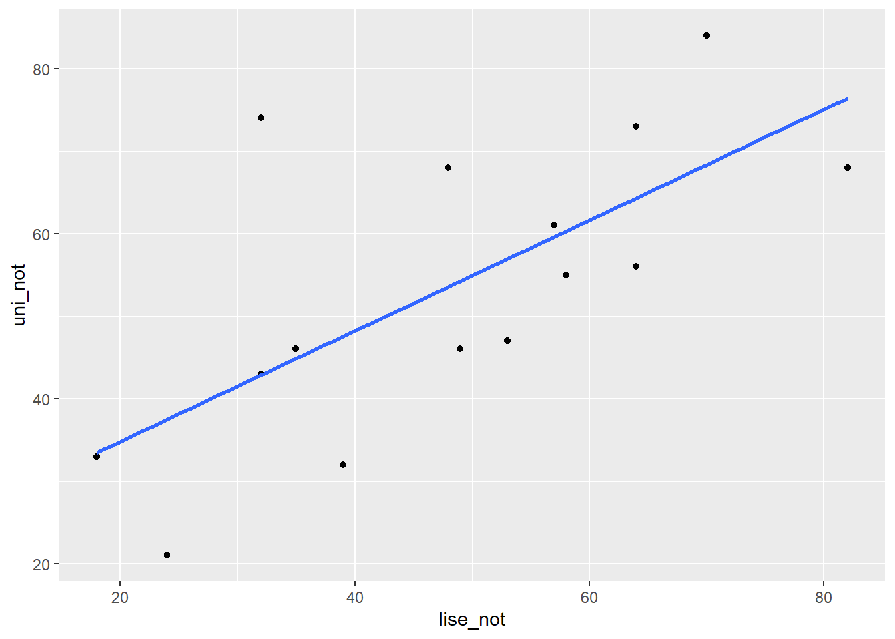
- Noktalardan olabildiğince yakın geçecek bir doğru çizilebilirse bu doğrudan yararlanarak \(X\) puanı bilinen öğrencilerin \(Y\) puanları kestirilebilir.
basitreg <- lm(uni_not ~ lise_not , veri)
summary(basitreg)
Call:
lm(formula = uni_not ~ lise_not, data = veri)
Residuals:
Min 1Q Median 3Q Max
-16.4748 -8.3488 -0.4494 5.0374 31.1580
Coefficients:
Estimate Std. Error t value Pr(>|t|)
(Intercept) 21.3733 10.1955 2.096 0.0562 .
lise_not 0.6709 0.1983 3.383 0.0049 **
---
Signif. codes: 0 '***' 0.001 '**' 0.01 '*' 0.05 '.' 0.1 ' ' 1
Residual standard error: 13.45 on 13 degrees of freedom
Multiple R-squared: 0.4681, Adjusted R-squared: 0.4272
F-statistic: 11.44 on 1 and 13 DF, p-value: 0.0049044 En küçük kareler yöntemi
Bu yönteme göre a ve b öyle bir belirlenmelidir ki dağılımdaki noktaların, doğrunun etrafındaki değişkenliği en aza indirgenmiş olmalıdır.
Regresyon doğrusu, noktalar ile regresyon doğrusu arasındaki sapmaların kareler toplamı en az olacak şekilde, saçılım grafiğindeki noktalar kümesine en uygun yere çizildiğinden bu ölçüte en küçük kareler ölçütü adı verilir.
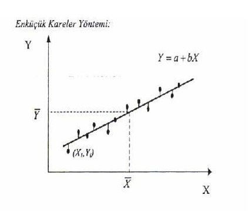
\(Y\) değeri ve regresyon doğrusundaki \(Y′\) arasındaki farkın en küçük olacak şekilde yerleştirilir.
\(\sum(Y-Y′)^2\) en küçük olacak şekilde yerleştirir.
\(b_{yx}=\frac{n\sum{XY}-\sum{X}\sum{Y}}{n\sum{X^2}-(\sum{X})^2}\)
\(a_{yx}=\frac{n\sum{Y}-b_{YX}\sum{X}}{n}\)
\(b_{yx}\) hesaplama
\(b_{YX}=\frac{n\sum{XY}-\sum{X}\sum{Y}}{n\sum{X^2}-(\sum{X})^2}\)
n <- length(lise_not)
byx = (n*sum(lise_not*uni_not)-sum(lise_not)*sum(uni_not))/
(n*sum(lise_not^2) - sum(lise_not)^2)
byx[1] 0.670898- Regresyon doğrusunun eğimi, değişkenlerin standart sapmalarının oranlarıyla bunlar arasındaki korelasyonun çarpımına eşittir.
(sd(uni_not)/sd(lise_not))*cor(lise_not,uni_not)[1] 0.670898\(a_{yx}\) hesaplama
\(a_{yx}=\frac{n\sum{Y}-b_{yx}\sum{X}}{n}\)
attach(veri)
ayx = (sum(uni_not) - byx*sum(lise_not))/15
ayx[1] 21.373265 Kestirimin Standart Hatası
Kestirim sonunda \(Y\) değişkeninin gözlenen değerleri ile regresyon değerleri \(Y'\) arasında fark olmaması veya bu farkın olabildiği kadar küçük olması istenir.
Gözlenen \(Y\) ve kestirilen \(Y'\) değerleri arasındaki farklar kestirimdeki hatalardır. Bu farkların karelerinin ortalamasının kare köküne kestirimin standart hatası adı verilir.
\[S_{yx}=\sqrt{\sum{\frac{(Y-Y')^2}{n-2}}}\]
\[S_{yx}=\sqrt{\frac{\sum{Y^2}-a\sum{Y}-b\sum{XY}}{n-2}}\]
Ortak dağılımın için kestirimin standart hatası tek değişkenli dağılımın standart sapmasına benzer.
Standart sapma tek değişkenli dağılımın ortalamadan farkının standart bir ölçüsü olduğu gibi, kestirimin standart hatası da noktaların standart regresyon çizgisinden farkının ölçüsüdür.
Bu nedenle kestirimin standart hatası verilen X değeri için kestirilen Y değerinin standart sapması şeklinde okunabilen \(S_{yx}\) sembolü ile gösterilir.
\(X\) değerlerinden kestirilen \(Y'\) ’lerin standart hatası
sqrt((sum(uni_not^2)-ayx*sum(uni_not)-
byx*(sum(uni_not*lise_not)))/13)[1] 13.44511res <- basitreg$residualssqrt(sum((res - mean(res)) ^ 2 / (length(res)-2)))[1] 13.445115.1 Basit Doğrusal Regresyon Uygulama
basitreg <- lm(uni_not ~ lise_not , veri)
library(broom)
glance(basitreg) %>% kable()| r.squared | adj.r.squared | sigma | statistic | p.value | df | logLik | AIC | BIC | deviance | df.residual | nobs |
|---|---|---|---|---|---|---|---|---|---|---|---|
| 0.4681284 | 0.4272152 | 13.44511 | 11.44199 | 0.0049036 | 1 | -59.19005 | 124.3801 | 126.5042 | 2350.021 | 13 | 15 |
\(R\) İki değişken arasında pearson korelasyon katsayısı
\(R-Square:\) Determinasyon katsayısı/bağımsız değişkenin bağımlı değişken üzerindeki açıklama oranı
\(\text{Adjusted R Square:}\) Düzeltmiş determinasyon katsayısı, şans eseri açıklanan değişimin neden olduğu hatanın arındırılmış hali.
\(\text{Standart Kestirimin Hatası:}\) Hata teriminin standart sapmasıdır.
Tablodaki \(p\) değeri regresyon modelindeki yordanan ve yordayan değişkenler arasındaki ilişki için hesaplanan değerin anlamlı olup olmadığını göstermektedir.
glance(basitreg)[,c(1,2,4,6,5)]Yani regresyon modelinde lise matematik puanları ile genel matematik puanları arasında doğrusal ilişki anlamlı düzeydedir. Regresyon modelindeki \(\text{df}\) 1 olması nedeni, regresyon modelindeki sabit ve eğimi katsayı olarak almasıdır. 2-1
\(p\) değerleri sabitin ve yordayıcı değişkenin katsayısının anlamlılık testi sonuçları
tidy(basitreg)- Çoklu regresyon her bir bağımsız değişkendeki değişikliklerin bağımlı değişkendeki değişikliklerle ne ölçüde ilişkili olduğunu kestirir. Ancak bağımsız değişkenler arasındaki korelasyon yordama sürecini zorlaştırır.
6 Bağımsız değişkenler arasındaki ilişki
ceteris paribus
- Örneğin, \(X_1\) ve \(Y\) arasındaki korelasyon katsayısı 0.40, \(X_2\) ve \(Y\) arasındaki korelasyon katsayısı 0.60, \(X_1\) ve \(X_2\) arasındaki korelasyon katsayısı sıfır ise, \(Y\)’nin varyansının iki değişken tarafından açıklanan toplam oranı iki değişkenin \(Y\) ile korelasyonlarının kareleri toplamından elde edilebilir:
\(0.40^2 + 0.50^2 = 0.16 + 0.25 = 0.41\)
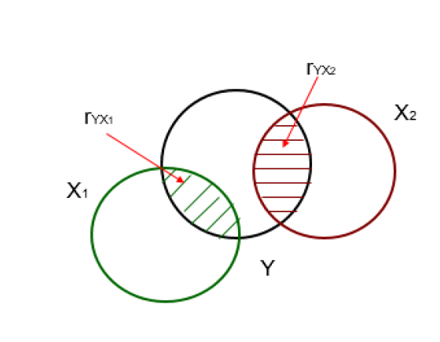
Ancak, uygulamada çoğunlukla \(X_1\) ve \(X_2\) birlikte değişim gösterirler ve iki değişkenin \(Y\) ile korelasyonlarının kareleri toplamı çok yüksek bir oran verir.
Bunun nedeni, iki bağımsız değişkenin aralarındaki korelasyondan dolayı her bir bağımsız değişken tarafından açıklanan \(Y\) varyansının bir kısmının üst üste gelmesidir.
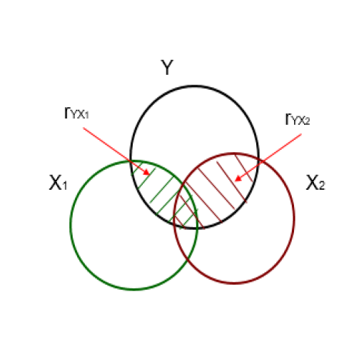
- Modeldeki bağımsız değişkenler arasındaki ilişkilerin kontrol altına alınması, modeldeki bir değişkenin bağımlı değişken üzerindeki etkisini incelerken, modeldeki diğer bütün değişkenlerin sabit tutulmasıdır (ceteris paribus)
7 Uygulama
veri seti 🔗 Performans.sav
Performans: Öğrencilerin matematik performans düzeyleri olup eşit aralık ölçeğinde ölçülen sürekli bir değişkendir.
Motivasyon: Öğrencilerin motivasyon düzeyleri olup eşit aralık ölçeğinde ölçülen sürekli bir değişkendir.
Kaygı: Öğrencilerin kaygı düzeyleri olup eşit aralık ölçeğinde ölçülen sürekli bir değişkendir.
Güven: Öğrencilerin matematiğe karşı güven düzeyleri olup eşit aralık ölçeğinde ölçülen sürekli bir değişkendir.
Analize başlamadan önce değişkenlerin betimsel istatistikleri ve değişkenler arası korelasyonlar incelenmelidir.
Betimsel İstatistikler
performans <- read_sav("data/Performans.sav")
psych::describe(performans) %>% kable(digit=3)| vars | n | mean | sd | median | trimmed | mad | min | max | range | skew | kurtosis | se | |
|---|---|---|---|---|---|---|---|---|---|---|---|---|---|
| Performans | 1 | 15 | 18.176 | 7.828 | 18.041 | 17.925 | 9.215 | 4.112 | 35.501 | 31.390 | 0.283 | -0.384 | 2.021 |
| Motivasyon | 2 | 15 | 39.933 | 10.025 | 40.000 | 40.154 | 10.378 | 22.000 | 55.000 | 33.000 | -0.178 | -1.173 | 2.588 |
| Kaygi | 3 | 15 | 18.071 | 4.769 | 18.298 | 17.860 | 2.247 | 10.720 | 28.169 | 17.449 | 0.593 | -0.079 | 1.231 |
| Guven | 4 | 15 | 21.630 | 7.375 | 22.000 | 21.308 | 5.708 | 8.750 | 38.700 | 29.950 | 0.300 | -0.101 | 1.904 |
- Korelasyon değerleri ve anlamlılığı
library(broom)
cor_1 <- cor.test(~ Performans + Motivasyon , data = performans)
tidy(cor_1) %>% kable(digit=3)| estimate | statistic | p.value | parameter | conf.low | conf.high | method | alternative |
|---|---|---|---|---|---|---|---|
| 0.824 | 5.252 | 0 | 13 | 0.54 | 0.94 | Pearson’s product-moment correlation | two.sided |
cor_2 <- cor.test(~ Performans + Kaygi , data = performans)
tidy(cor_2)[,c(1,3)] %>% kable(digit=3)| estimate | p.value |
|---|---|
| -0.241 | 0.388 |
cor_3 <- cor.test(~ Motivasyon + Kaygi , data = performans)
tidy(cor_3)[,c(1,3)] %>% kable(digit=3)| estimate | p.value |
|---|---|
| 0.147 | 0.601 |
- İlişki Grafiği
library(GGally)
ggpairs(performans[,1:3])
- 3D grafik
library(scatterplot3d)
scatterplot3d(performans[,1:3],
pch = 16,
color="steelblue",
angle=75)
- 3D grafik
scatterplot3d(performans[,1:3],
pch = 16, color="steelblue",
angle=75,
box = FALSE,type = "h")
- 3D grafik
library(rgl)
plot3d(performans$Performans, performans$Motivasyon, performans$Kaygi,
xlab = "Performans", ylab = "Motivasyon",
zlab = "Kaygi",
type = "s",size = 1.5,col = "red")
rglwidget() 8 Çoklu korelasyon katsayısı
\(R^2\) değeri çoklu korelasyon katsayısı (multiple correlation coefficient) olup bağımlı değişkenin gözlenen değerleri ile bağımsız değişkenlerin en iyi doğrusal kombinasyonu arasındaki korelasyondur.
En iyi doğrusal kombinasyon, bağımlı değişkenin bağımsız değişkenlerden yordanmasında, daha iyi bir iş yapacak regresyon katsayıları kümesi olmadığı anlamına gelir.
model <- lm(Performans ~ Motivasyon + Kaygi,data=performans)
sqrt(glance(model)[,1]) #r.squared değerinin karekoku alınırR değeri bağımlı değişkenin gözlenen ve yordanan değerleri arasındaki korelasyondur.
Bağımlı değişkenin yordanan değerinin bağımlı değişkenin gözlenen değerine mümkün olduğunca yakın olmasını gerektiren en küçük kareler kriterinden dolayı bağımlı değişkenin gözlenen ve yordanan değerleri arasındaki korelasyon eksi değerler alamaz. Dolayısıyla çoklu korelasyon katsayısı 0 ile 1 arasında değişir
Çoklu Korelasyon Formulu \[R_{Y_{12}}= \sqrt{\frac{r^2_{Y_1}+r^2_{Y_2}-2r^2_{Y_1}r^2_{Y_2}r_{12}}{1-r_{12}}}\] \[R_{Y_{12}}=\sqrt{\frac{(0.824)^2+(-0.241)^2-2*(0.824)(-0.241)(0.147)}{1-(0.147)^2}}) = 0.902\]
model_s <- augment(model,data=performans)
cor(model_s[,1], model_s[,5]) # Y ve Y' arası korelasyon .fitted
Performans 0.9019952library(outliers)
model_s$.resid %>% scores(type = "z") [1] 1.45276239 -0.81583220 -0.92417187 0.58361096 -0.21178695 -1.39503047
[7] -0.46313334 -1.03126421 1.07754165 -0.07749693 2.31059738 -0.34324063
[13] 0.20727527 -0.07285515 -0.29697589
attr(,"format.spss")
[1] "F8.2"
attr(,"display_width")
[1] 9öğrencilerin gözlenen performans puanları ve yoradan performans puanları arasındaki korelasyon katsayısı nokta 0.902 eşittir
9 Belirlilik Katsayısı
model <- lm(Performans ~ Motivasyon + Kaygi,data=performans)
glance(model)[,1]Performans puanlarındaki varyansın yaklaşık %81’i öğrencilerin motivasyon ve kaygı puanları tarafından açıklanabilir.
Modele yeni bir bağımsız değişken eklendiğinde, \(R^2\) değeri artar, sadece şans eseri olsa bile. Böylece daha fazla bağımsız değişken içeren model sadece daha fazla bağımsız değişken içerdiği için veriye daha iyi uyum sağlıyor gibi gözükebilir.
\(\text{adj}{R^2}\) değeri, \(R^2\) değerinin modeldeki bağımsız değişken sayısı için modifiye edilmiş versiyonudur. \(\text{adj}{R^2}\) değeri, yeni eklenen bağımsız değişken modeli şans eseri beklenenden daha fazla geliştirirse artar, daha az geliştirirse azalır.
\(\text{adj}{R^2}\) değeri, eksi değerler alabilir ancak genellikle artı değerler alır. Her zaman \(R^2\) değerinden daha düşüktür.
\(R^2\) değeri, \(n\) gözlemlerin sayısı, \(k\) bağımsız değişkenlerin sayısı olmak üzere, aşağıdaki eşitlikle hesaplanabilir. \[R^2_{adj}= R^2 - \frac{k-(1-R^2)}{n-k-1}\] \[R^2_{adj}= 0.814 - \frac{2-(1-0.814)}{15-2-1} =0.783\]
glance(model)[,2]\(adj R^2\) evrende gerçek korelasyonun karesinin daha az yanlı kestirimi olsa da, çoğunlukla \(R^2\) değeri rapor edilir.
10 Kestirimin standart hatası
- Kestirimin standart hatası (standard error of the estimation), modeldeki artıkların karelerinin toplamının, \(n-p\) ( \(n\) örneklem büyüklüğü ve \(p\) modeldeki parametrelerin sayısı) ile bölünmesiyle elde edilen bölümün kareköküdür.
library(outliers)
res <- model$residuals
model_ssqrt(sum((res - mean(res)) ^ 2 / (length(res)-3)))[1] 3.650458glance(model)[,3]11 Model veri uyumu
- Modelin veriye iyi uyup uymadığının test edilmesinde kullanılacak F değeri varyans analizi sonucunda elde edilir.
glance(model)[,4:6] %>% kable(digit=3)| statistic | p.value | df |
|---|---|---|
| 26.188 | 0 | 2 |
F istatistiği 26.2 değerine eşittir ve istatistiğe ilişkin p < 0.001. Bu olasılık 0.05’ten küçük olduğundan, sıfır hipotezi reddedilir.
Bu sonuç motivasyon ve kaygı değişkenlerinin ikisi birlikte kullanıldığında, çoklu korelasyon katsayısının anlamlı olarak sıfırdan büyük olduğunu ifade etmektedir. Diğer bir ifadeyle, motivasyon ve kaygı değişkenleri performansı istatistiksel olarak anlamlı bir şekilde yordamaktadır.
Regresyon modeli veriye iyi uyum sağlamaktadır.
Model sonuçları
tidy(model) %>% kable(digit=3)| term | estimate | std.error | statistic | p.value |
|---|---|---|---|---|
| (Intercept) | 1.744 | 5.096 | 0.342 | 0.738 |
| Motivasyon | 0.686 | 0.098 | 6.975 | 0.000 |
| Kaygi | -0.607 | 0.207 | -2.936 | 0.012 |
Performans puanlarındaki farklılıkların bir kısmı motivasyon puanlarındaki farklılıklardan, bir kısmı ise kaygı puanlarındaki farklılıklardan kaynaklanmaktadır
12 Kaygının sabit tutulması
- Performansın sadece kaygıdan yordandığı basit regresyon analizi gerçekleştirilirse, yordanan puanlar ve gözlenen puanlar arasındaki fark (artıkPER1), performansın kaygıdan yordanamayan kısmı olacaktır.
artıkPER1 <- lm(Performans ~ Kaygi,data=performans)$residuals- Motivasyonun sadece kaygıdan yordandığı basit regresyon analizi gerçekleştirilirse, yordanan puanlar ve gözlenen puanlar arasındaki fark (artıkMOT), motivasyonun kaygıdan yordanamayan kısmı olacaktır.
artıkMOT <- lm(Motivasyon ~ Kaygi,data=performans)$residualsBöylece artıkPER1 ve artıkMOT olarak adlandırılan artık puanlar kaygıdan bağımsız olacaktır.
Diğer bir ifadeyle, kaygı ilişkilerinde herhangi bir rol oynamayacaktır. artıkPER1 puanları artıkMOT puanlarından yordanırsa, artıkMOT puanlarına ilişkin eğim katsayısı 0.686 olarak kestirilecektir. Bu değer, öğrencilerin kaygı düzeyleri kontrol altına alındıktan sonra, motivasyon düzeylerindeki bir birimlik artışın matematikteki performans düzeylerini 0.686 birim artırmaya eğilimli olduğunu önermektedir
lm(artıkPER1 ~ artıkMOT,
data=data.frame(artıkPER1,artıkMOT))$coefficients %>% kable(digit=3)| x | |
|---|---|
| (Intercept) | 0.000 |
| artıkMOT | 0.686 |
\[B_{Y_{12}} = \frac{r_{Y1}-r_{Y2}r_{12}}{1-r^2_{12}}\frac{sd_Y}{sd_1}\]
\[B_{Y_{12}} = \frac{(0.824)-(-0.241)(0.147)}{1-(0.022)}\frac{7.827}{10.025} = 0.879 * 0.780 =0.686\]
Bu değer, kaygı puanı kontrol altına alındıktan sonra, motivasyon puanlarındaki bir birimlik artışın öğrencilerin matematik performansından 0.686 birim artmaya eğilimi olduğunu önermektedir.
((cor(performans)[2,1] - cor(performans)[3,1]*cor(performans)[2,3])/
(1-cor(performans)[2,3]^2))*(sd(performans$Performans)/sd(performans$Motivasyon))[1] 0.686298813 Motivasyonun sabit tutulması
- Performansın sadece motivasyondan yordandığı basit regresyon analizi gerçekleştirilirse, yordanan puanlar ve gözlenen puanlar arasındaki fark (artıkPER2), performansın motivasyondan yordanamayan kısmı olacaktır.
artıkPER2 <- lm(Performans ~ Motivasyon ,data=performans)$residuals- Kaygının sadece motivasyondan yordandığı basit regresyon analizi
gerçekleştirilirse, yordanan puanlar ve gözlenen puanlar arasındaki fark (artıkKAY), kaygının motivasyondan yordanamayan kısmı olacaktır.
artıkKAY <- lm(Kaygi ~ Motivasyon ,data=performans)$residualsBöylece artıkPER2 ve artıkKAY olarak adlandırılan artık puanlar motivasyondan bağımsız olacaktır. Diğer bir ifadeyle, motivasyon ilişkilerinde herhangi bir rol oynamayacaktır.
artıkPER2 puanları artıkKAY puanlarından yordanırsa, artıkKAY puanlarına ilişkin eğim katsayısı -0.607 olarak kestirilecektir. Bu değer, öğrencilerin motivasyon düzeyleri kontrol altına alındıktan sonra, kaygı düzeylerindeki bir birimlik artışın matematikteki performans düzeylerini 0.607 birim azaltmaya eğilimli olduğunu önermektedir
lm(artıkPER2 ~ artıkKAY,
data=data.frame(artıkPER2,artıkKAY))$coefficients %>% kable(digit=3)| x | |
|---|---|
| (Intercept) | 0.000 |
| artıkKAY | -0.607 |
\[ B_{Y_{21}} = \frac{r_{Y2}-r_{Y1}r_{12}}{1-r^2_{12}}\frac{sd_Y}{sd_2} \]
\[B_{Y_{12}} = \frac{(-0.241)-(0.824)(0.147)}{1-(0.022)}\frac{7.827}{4.769}=(-0.370)*(1.641) =-0.607\]
Bu değer, motivasyon puanı kontrol altına alındıktan sonra, kaygı puanlarındaki bir birimlik artışın öğrencilerin matematik performansından 0.607 birim azaltmaya eğilimli olduğunu önermektedir.
((cor(performans)[3,1] - cor(performans)[2,1]*cor(performans)[2,3])/
(1-cor(performans)[2,3]^2))*(sd(performans$Performans)/sd(performans$Kaygi))[1] -0.607285714 Regresyon Sabiti
\[ B_0 = M_Y - B_{Y12}*M_1 -B_{Y21}*M_2 \] \[B_0 = 18.176 - (0.686)*(39.933) -(-0.607)*(18.701) = 1.744\]
mean(performans$Performans)-
model$coefficients[2]*mean(performans$Motivasyon)-
model$coefficients[3]*mean(performans$Kaygi)Motivasyon
1.744129 Bu değer hem motivasyon puanı hem de kaygı puanı 0’a eşit olduğunda yordanan performans puanıdır.
- Böylece yordanan performans puanı
\[Y_{\text{performans}_i} = 1.744 + 0.686 X_{\text{motivasyon}_i} - 0.607 X_{\text{kaygi}_i}\]
15 Standart puanlar ile regresyon
- Çoklu regresyon eşitliğini elde etmeden önce değişkenlerin her biri standartlaştırılırsa (değişkenlerin her birinin ortalaması 0, standart sapması 1 olacak şekilde ayarlanırsa), sonuçlar standart sapma birimlerince ifade edilir.
library(QuantPsyc)
lm.beta(model) %>% kable(digit=3)| x | |
|---|---|
| Motivasyon | 0.879 |
| Kaygi | -0.370 |
- Böylece örnekte standartlaştırılmış değişkenler kullanıldığında, yordanan standartlaştırılmış performans düzeyleri aşağıdaki eşitlikle hesaplanabilir:
\[ Y_\text{Zperformans_i} = 0.879 X_\text{Zmotivasyon_i} + -0.370 X_\text{Zkaygi_i} \]
- Motivasyonun standartlaştırılmış eğim katsayısının mutlak değeri, kaygının standartlaştırılmış eğim katsayının mutlak değerinden daha büyük olduğundan, motivasyonun öğrencilerin matematikteki performanslarını yordamada kaygıya göre daha önemli bir yordayıcı olduğu söylenebilir.
|0.879| > |-0.307|
Ancak bağımsız değişkenlerin standartlaştırılmamış eğim katsayılarını karşılaştırmak uygun değildir.
NOT: Bağımsız değişkenler arasında korelasyon olduğunda, standartlaştırılmış eğim katsayısı bağımlı değişken ile bağımsız değişken arasındaki korelasyon katsayısı değildir.
16 Yordanan ve Artık Değerler
- Öğrencilerin standratlaştırılmamış yordanan matematik performans düzeyleri ve standartlaştırılmamış artıkları modelden çekilebilir.
data.frame(
gercek = performans$Performans,
yordanan = model$fitted.values,
artik = model$residuals) %>% kable(digit=3)| gercek | yordanan | artik |
|---|---|---|
| 12.371 | 7.461 | 4.910 |
| 4.112 | 6.869 | -2.757 |
| 21.627 | 24.750 | -3.123 |
| 24.921 | 22.949 | 1.972 |
| 26.088 | 26.804 | -0.716 |
| 17.701 | 22.416 | -4.715 |
| 10.272 | 11.837 | -1.565 |
| 18.898 | 22.384 | -3.485 |
| 19.200 | 15.558 | 3.642 |
| 17.751 | 18.013 | -0.262 |
| 35.501 | 27.692 | 7.809 |
| 18.041 | 19.201 | -1.160 |
| 11.358 | 10.658 | 0.701 |
| 24.256 | 24.502 | -0.246 |
| 10.542 | 11.546 | -1.004 |
- Örneğin, ilk öğrenci için standratlaştırılmamış yordanan değer yaklaşık 7.46, artık ise yaklaşık 4.910’tir.
16.1 Yordanan ve Artık Değerlerin Standart Puanları
library(outliers)
yordanan_s <- model$fitted.values %>% scores(type = "z")
artik_s <- model$residuals %>% scores(type = "z")
data.frame(yordanan_s,artik_s) %>% kable(digit=3)| yordanan_s | artik_s |
|---|---|
| -1.518 | 1.453 |
| -1.601 | -0.816 |
| 0.931 | -0.924 |
| 0.676 | 0.584 |
| 1.222 | -0.212 |
| 0.601 | -1.395 |
| -0.898 | -0.463 |
| 0.596 | -1.031 |
| -0.371 | 1.078 |
| -0.023 | -0.077 |
| 1.348 | 2.311 |
| 0.145 | -0.343 |
| -1.065 | 0.207 |
| 0.896 | -0.073 |
| -0.939 | -0.297 |
- Öğrencilerin standratlaştırılmış yordanan matematik performans düzeyleri ve standartlaştırılmış artıkları modelden çekilebilir.
library(car)
avPlots(model) 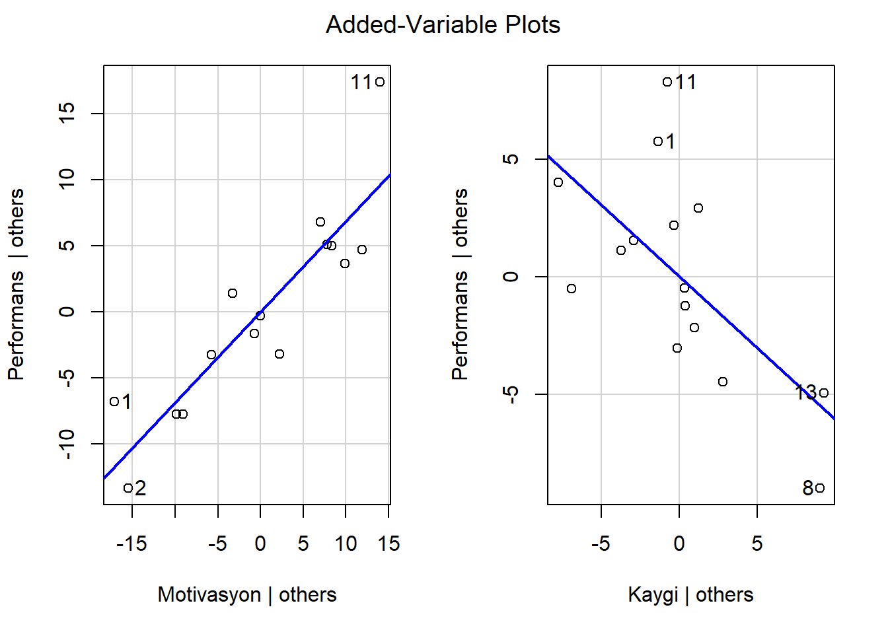
17 Model Grafikleri
- Model grafikleri dört farklı şekilde göstermektedir:
Artıklar ve Yordanan Değerler: Doğrusal ilişki varsayımlarını kontrol etmek için kullanılır. Belirgin desenleri olmayan yatay bir çizgi, doğrusal bir ilişkinin göstergesidir.
Normal Q-Q. Artıkların normal dağılıp dağılmadığını incelemek için kullanılır. Artık noktalarının düz kesikli çizgiyi takip etmesi beklenir.
Ölçek-Konum (veya Yayılma-Konum). Artıkların varyansının homojenliğini (homoscedasticity) kontrol etmek için kullanılır. Eşit yayılmış noktalara sahip yatay çizgi, homoscedasticity’nin iyi bir göstergesidir.
Artıklar ve Kaldıraç/Leverage Etkili gözlemleri, yani analize dahil edildiğinde veya analizden çıkarıldığında regresyon sonuçlarını etkileyebilecek uç değerleri belirlemek için kullanılır.
opar <- par(mfrow = c(2,2), oma = c(0, 0, 1.1, 0))
plot(model, las = 1) # Residuals, Fitted, ...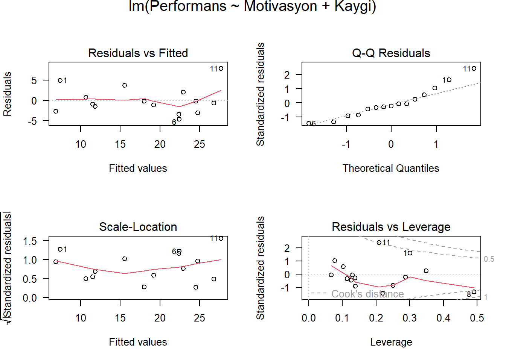
par(opar)- Model grafiklerini daha düzgün elde etmek için ggfortify pakeini de kullanabilirsiniz.
library(ggfortify)
autoplot(model)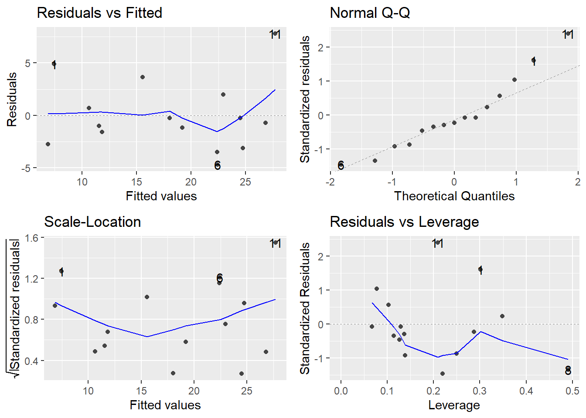
18 Çoklu Regresyon
- Regresyon katsayılarından her birinin istatistiksel olarak sıfırdan farklı olup olmadığı test edilebilir. Bu durumda regresyon katsayılarına ilişkin test edilecek sıfır hipotezleri aşağıdaki gibidir:
\(H_0: \beta_1 = 0\) - Kaygı düzeyleri eşit olan öğrenciler için motivasyon düzeylerindeki farklılıklar performans düzeylerinde farklılığa yol açmaz.
\(H_0: \beta_2 = 0\) - Motivasyon düzeyleri eşit olan öğrenciler için kaygı düzeylerindeki farklılıklar performans düzeylerinde farklılığa yol açmaz.
- Hipotez testlerine ilişkin t istatistiği, standartlaştırılmamış regresyon katsayılarının standart hatalarına bölünmesi ile hesaplanır.
tidy(model) %>% kable(digit=3)| term | estimate | std.error | statistic | p.value |
|---|---|---|---|---|
| (Intercept) | 1.744 | 5.096 | 0.342 | 0.738 |
| Motivasyon | 0.686 | 0.098 | 6.975 | 0.000 |
| Kaygi | -0.607 | 0.207 | -2.936 | 0.012 |
0.686 /0.0984[1] 6.971545Motivasyona ilişkin eğim için testin, olasılık değeri (p ˂ 0.001) 0.05’ten daha küçük olduğundan, anlamlı olarak sıfırdan farklı olduğu görülmektedir.
Hipotez testlerine ilişkin t istatistiği standartlaştırılmamış regresyon katsayılarının standart hatalarına bölünmesi ile hesaplanır.
Kaygıya ilişkin eğim de anlamlıdır (t = -2.936, p = 0.012), öğrencilerin motivasyon düzeylerindeki farklılıklar kontrol altına alınsa bile, öğrencilerin kaygı düzeyleri performans düzeylerinde fark yapmaktadır ve kaygı düzeyi negatif bir etkiye sahiptir.
Hipotez testlerine ilişkin t istatistiği standartlaştırılmamış regresyon katsayılarının standart hatalarına bölünmesi ile hesaplanır.
Regresyon katsayısının standart hatası tekrarlanan örneklemlerde istatistiğin değişkenliğini belirtir.
İki regresyon katsayısı ile ilgili p değerleri 0.05 alfa düzeyinden daha küçüktür, bu nedenle her iki bağımsız değişken de öğrencilerin matematikteki performanslarını yordamada istatistiksel olarak anlamlıdır.
19 Yol Şeması
- Çoklu regresyon modelini bir yol şeması ile sunmak oldukça kullanışlıdır.
# path model
library(lavaan)
library(lavaanPlot)
model_1 <- 'Performans ~ Motivasyon + Kaygi'
fit1 <- sem(model_1, data = performans)- Standart çözüm
lavaanPlot(model = fit1, coefs = TRUE, stand = TRUE, sig = 0.05) - Standart olmayan çözüm:
Not: Araştırmacılar özellikle ortalamaların yapısı ile ilgilenmedikleri sürece yol şemasında \(b_0\) gösterilmez.
lavaanPlot(model = fit1, coefs = TRUE, stand = FALSE, sig = 0.05) - Yol şemeasını istediğiniz formata getirebilirsiniz.
library(semptools)
library(semPlot)
m <- matrix(c("Motivasyon", NA, "NA", NA, NA,
NA, NA, NA, NA, "Performans",
"Kaygi", NA, NA, NA, NA), byrow = TRUE, 3, 5)
yol<- semPaths( fit1, whatLabels = "std",
sizeMan = 10,
edge.label.cex = 1.15,
style = "ram",
nCharNodes = 0, nCharEdges = 0,
layout = m)- Anlamlılık düzeylerini ekleyebilirsiniz.
yol <- mark_sig(yol, fit1)
plot(yol)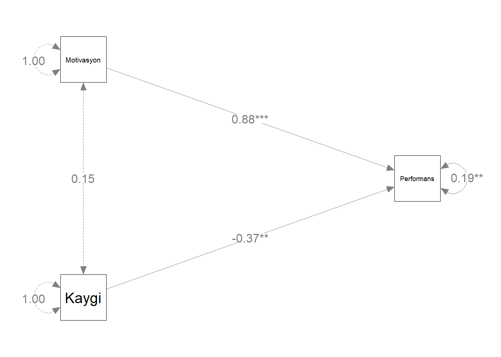
- Öğrencilerin matematik performanslarının düzeyini motivasyon ve kaygı düzeylerinden yordamak için çoklu regresyon analizi gerçekleştirilmiştir. Genel regresyon istatistiksel olarak anlamlıdır \(F_{[2, 12]} = 26.188, p < .001\) ve \(R^2 = 0.814\) Öğrencilerin hem motivasyonlarının düzeyi ( \(b_1 = 0.686\)) hem kaygılarının düzeyi ( \(b_2 = -0.607\)) matematik performanslarının düzeyinin istatistiksel olarak anlamlı yordayıcılarıdır, \(t = 6.975; p < .001, t = -2.936; p = .012\)
20 Aşamalı (Stepwise) Regresyon
Bir regresyon modeline dahil edilebilecek çok sayıda değişken bulunduğunda, bu değişkenlerden en uygun regresyon eşitliğinin oluşturulması için değişken seçiminde çeşitli yöntemler vardır. Bu yöntemlerden birisi aşamalı stepwise regresyondur.
Aşamalı regresyon yöntemi her bağımsız değişkenin regresyon modeline katkısının incelenmesini sağlar.
Bu yönteme göre önce bağımlı değişkenle en yüksek korelasyona sahip bağımsız değişken seçilerek basit regresyon modeli kurulur.
Birinci regresyon eşitliğinden kalan hata varyansının istatistiksel olarak anlamlı kısmını en çok açıklayan bağımsız değişkeni bulmak için kısmi korelasyon katsayıları incelenir ve en yüksek kısmi korelasyon katsayısına sahip bağımsız değişken modele eklenir.
İki bağımsız değişken ile regresyon eşitliği yeniden hesaplanır ve eklenen değişkenin modele anlamlı katkısı olup olmadığı test edilir. Bu işlem modele anlamlı katkı sağlayacak değişken kalmayana kadar devam eder.
tekdegisken <- lm(Performans ~ Motivasyon, data=performans)
glance(tekdegisken) %>% kable(digit=3)| r.squared | adj.r.squared | sigma | statistic | p.value | df | logLik | AIC | BIC | deviance | df.residual | nobs |
|---|---|---|---|---|---|---|---|---|---|---|---|
| 0.68 | 0.655 | 4.598 | 27.585 | 0 | 1 | -43.094 | 92.188 | 94.312 | 274.791 | 13 | 15 |
tum <- lm(Performans ~ Motivasyon + Kaygi, data=performans)
glance(tum) %>% kable(digit=3)| r.squared | adj.r.squared | sigma | statistic | p.value | df | logLik | AIC | BIC | deviance | df.residual | nobs |
|---|---|---|---|---|---|---|---|---|---|---|---|
| 0.814 | 0.783 | 3.65 | 26.188 | 0 | 2 | -39.033 | 86.067 | 88.899 | 159.91 | 12 | 15 |
Birinci modelde motivasyon tek yordayıcıdır ve performans ile korelasyonu 0.824’tür \(R = 0.824\) . Motivasyon tek başına performans puanlarındaki varyansın yaklaşık %68’ini \(R^2 = 0.680\) açıklamaktadır.
Modele kaygının yordayıcı olarak eklenmesiyle korelasyon 0.902’ye \(R = 0.902\) yükselmiştir. Motivasyon ve kaygı birlikte performans puanlarındaki varyansın yaklaşık %81’ini \(R^2 = 0.814\) açıklamaktadır.
Modele kaygının eklenmesiyle \(R^2\) değişimi (R Square Change) 0.134’tür. \(R^2\) değerindeki bu değişim kaygının eklenmesiyle açıklanan varyans oranında %13’lük bir artış olduğu anlamındadır. \(R^2\) değişimi F testi (F Change) ile test edilmiştir ve F değerindeki değişim istatistiksel olarak anlamlıdır \(p = 0.012\) Dolayısıyla modele eklenen kaygı değişkeni yordamayı anlamlı olarak geliştirmiştir.
tidy(anova(tum,tekdegisken))Modelde tek bir yordayıcı (motivasyon) varken, korelasyon 0.824’tür ve sıfır hipotezi doğruysa bu kadar yüksek bir korelasyon elde etme olasılığı p < 0.001. Bu olasılık 0.05’ten küçük olduğundan, korelasyonun anlamlı olarak sıfırdan büyük olduğu söylenebilir.
Modele motivasyon değişkeninin yanı sıra kaygı değişkeni de yordayıcı olarak eklendiğinde, çoklu korelasyon 0.902’dir ve sıfır hipotezi doğruysa bu kadar yüksek bir korelasyon elde etme olasılığı p < 0.001. Bu olasılık 0.05’ten küçük olduğundan, çoklu korelasyonun anlamlı olarak sıfırdan büyük olduğu söylenebilir.
Birinci modelde motivasyon tek yordayıcıdır. Bu modelde motivasyona ilişkin standartlaştırılmamış eğim katsayısı 0.644 olarak kestirilmiş olup kestirimin standart hatası 0.123’tür. Bu katsayı p ˂ .05’te anlamlıdır. Standartlaştırılmış eğim katsayısı 0.824 olarak kestirilmiştir ve bu değer motivasyon ile performansarasındaki korelasyondur.
İkinci modelde motivasyon ve kaygı yordayıcılardır. Bu modelde motivasyona ilişkin standartlaştırılmamış eğim katsayısı 0.686 olarak kestirilmiş olup kestirimin standart hatası 0.098’dir.
Öğrencilerin kaygı düzeyi kontrol altına alındığında, artan motivasyon düzeyi daha yüksek performans puanları ile ilişkilidir. Bu katsayı p ˂ .05’te anlamlıdır. Standartlaştırılmış eğim katsayısı 0.879 olarak kestirilmiştir. Kaygıya ilişkin standartlaştırılmamış eğim katsayısı -0.607 olarak kestirilmiş olup kestirimin standart hatası 0.207’dir. Öğrencilerin motivasyon düzeyi kontrol altına alındığında, artan kaygı düzeyi daha düşük performans puanları ile ilişkilidir.
Kaygının modele eklenmesi korelasyonu çok fazla artırmasa da istatistiksel olarak anlamlı bir yordayıcıdır. Standartlaştırılmış eğim katsayısı -0.370 olarak kestirilmiştir.
21 Etkili Gözlemlerin Belirlenmesi
Etkili gözlemler (influential observations) regresyon sonuçları üzerinde orantısız etkisi olan bütün gözlemleri içerir.
Bu aşırı değerler regresyon doğrusunu kendilerine doğru çekerek modelin katsayıları üzerinde anlamlı etkileri olan değerlerdir.
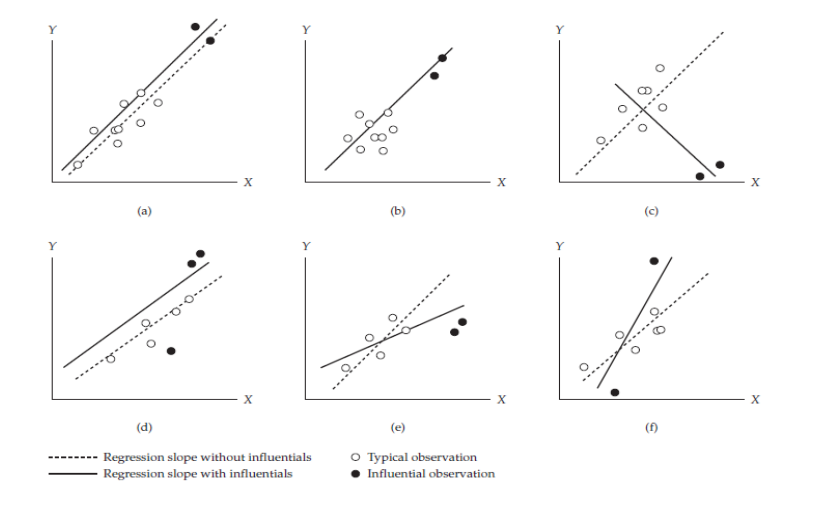
Regresyon analizinin sonuçları ve sonuçların genellenebilirliği birkaç gözlemle değişebilir. Dolayısıyla bu gözlemlerin etkilerinin değerlendirilmesi için belirlenmesi gerekir.
Etkili gözlem, gözlemlerdeki veya veri girişindeki bir hatadan kaynaklanabilir. Bu durumda birey analizden çıkarılabilir veya veri düzeltilebilir.
Sıradışı bir durumla açıklanabilen, ender karşılaşılan geçerli bir gözlem analizden çıkarılabilir. Halbuki olası bir açıklaması olmayan, ender karşılaşılan bir gözlemi bir neden olmadan çıkarmak problemlidir ancak gözlemin analize dahil edilmesi de savunulamayabilir. Bu durumda analizlerin gözlem dahil edilerek ve dahil edilmeyerek tekrarlanması önerilir.
Cook’s D
Etkinin en yaygın ölçümü Cook’s D olarak bilinir.
Bağımlı değişkenlerdeki potansiyel uç değerlerin belirlenmesinde kullanışlı bir istatistiktir. Uzaklık için en yaygın ölçüm artıktır.
Artık herhangi bir nokta ve regresyon eğrisi arasındaki dikey uzaklığı ölçer. Bu noktalar rastgele hatayı temsil edebilir, veri yanlış kodlanmış olabilir veya veri setine ait olmayan olağan dışı durumları yansıtabilir.
Cook’s D i gözlemi veriden çıkarılıp analiz yeniden gerçekleştirilirse, \(b_j\) katsayısındaki değişikliğin karesinin toplamının bir fonksiyonudur.
Her gözlem için hesaplanabilir. Her gözlem için bu değer, N gözlemlerin sayısı olmak üzere 4/N ile karşılaştırılabilir. 4/N üzerindeki değerler problem olabilecek gözlemlere işaret eder.
Cook’s D için kesme noktası \(4/15= 0.267\), 1., 8. ve 11. gözlemler bu sınırı asıyor
Cook’s D
library(olsrr)
ols_plot_cooksd_bar(model)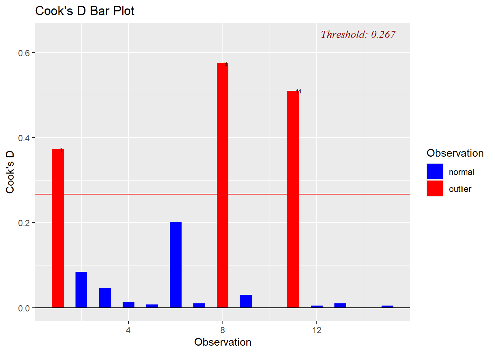
DFBETA
- Cook’s D etkinin genel bir ölçümü olarak düşünülebilir. Gözlemin eklenmesiyle her katsayının nasıl değiştiğini ölçen daha spesifik bir ölçüm ele alınabilir. Bu ölçüm DFBETA olarak adlandırılır ve her gözlem için hesaplanabilir. (kritik değer \(2/\sqrt{n}\)
DFBETA için kesme noktası ise \(2/\sqrt{15} = 0.516\) hat değerleri ise levarge a karşılık geliyor.
DFBETA
ols_plot_dfbetas(model)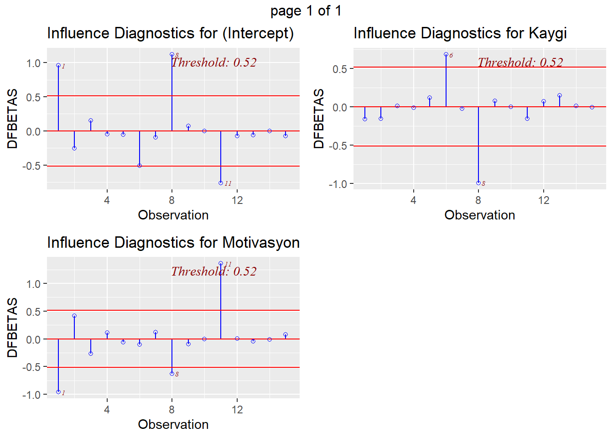
influence.measures(model, infl = influence(model))Influence measures of
lm(formula = Performans ~ Motivasyon + Kaygi, data = performans) :
dfb.1_ dfb.Mtvs dfb.Kayg dffit cov.r cook.d hat inf
1 0.95795 -0.960377 -0.16108 1.1422 0.896 0.372039 0.3012
2 -0.25252 0.415588 -0.15745 -0.4984 1.422 0.084595 0.2501
3 0.14949 -0.263213 0.00861 -0.3676 1.209 0.045656 0.1388
4 -0.04850 0.110703 -0.01220 0.1872 1.332 0.012398 0.1026
5 -0.05212 -0.059328 0.11625 -0.1413 1.796 0.007232 0.2869 *
6 -0.50564 -0.103904 0.68481 -0.8203 0.924 0.201071 0.2200
7 -0.09262 0.115511 -0.02600 -0.1686 1.409 0.010150 0.1264
8 1.12071 -0.626060 -0.99660 -1.3623 1.570 0.574244 0.4905 *
9 0.07075 -0.094818 0.07387 0.3019 1.061 0.030173 0.0774
10 -0.00254 0.000079 -0.00142 -0.0191 1.390 0.000132 0.0670
11 -0.76153 1.357765 -0.15466 1.6459 0.228 0.510106 0.2092 *
12 -0.07535 0.006834 0.07308 -0.1166 1.424 0.004897 0.1142
13 -0.06170 -0.043739 0.14852 0.1670 1.965 0.010089 0.3487 *
14 -0.00051 -0.015642 0.01231 -0.0267 1.490 0.000260 0.1297
15 -0.07231 0.081208 -0.00672 -0.1135 1.472 0.004648 0.1373 Leverage (hi)
Bağımsız değişkenlerdeki potansiyel uç değerlerin belirlenmesinde kullanışlı bir istatistiktir.
Levarage bir gözlemin bir bağımsız değişkene, \(X_j\), göre olağan dışı olma derecesini ölçer.
Leverage için olası değerler, N gözlemlerin sayısı olmak üzere, 1/N ile 1.0 arasında değişir.
Ortalama leverage puanı, p bağımsız değişken sayısı ve N gözlem sayısı olmak üzere, (p +1)/N eşitliği ile hesaplanabilir. Yüksek leverage değerine sahip gözlemler ortalama değerden 2 veya 3 kat daha yüksek leverage puanlarına sahip olacaktır.
library(olsrr)
ols_plot_resid_lev(model)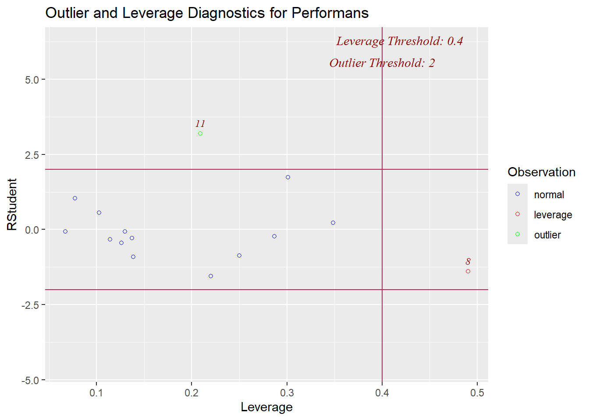
Influence (Etki)
Etkili bir gözlem uzaklık ve/veya leverage için yüksek değere sahip olan ve modelin kesişim ve eğim katsayılarını anlamlı olarak etkileyen bir gözlemdir.
Bu gözlemin varlığı veya yokluğu regresyon yüzeyinin yerini önemli ölçüde değiştirecektir.
Uzaklık ve/veya leverage için yüksek değere sahip gözlemlerin regresyon üzerinde önemli bir etkisi olmayabilir. Bir gözlemin etkide yüksek olması için hem uzaklık hem de leverage için yüksek değerlere sahip olması gerekir.
ols_plot_dffits(model)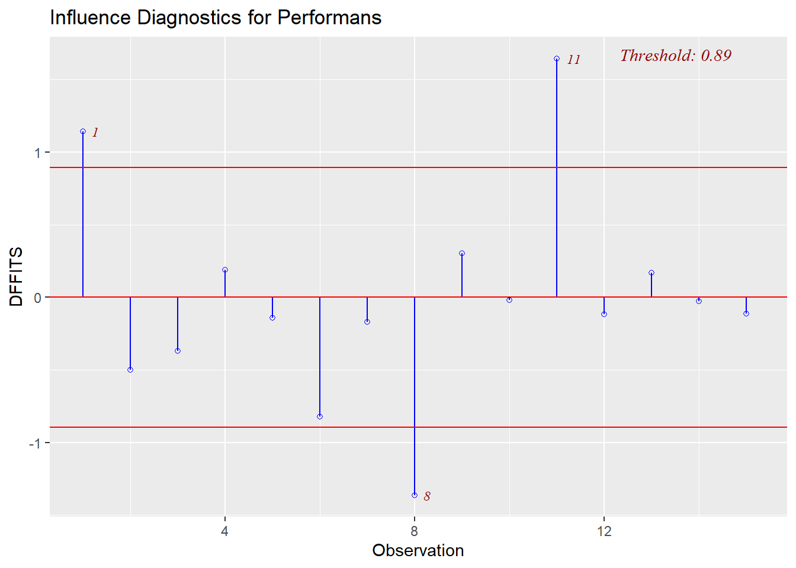
22 Kategorik Bağımsız bir Değişken ile Çoklu Regresyon
Regresyon modellerinde bağımsız bir değişken sürekli veya kategorik olabilir.
Bir regresyon analizine kategorik bir değişkeni dahil ederken, regresyon modelinin değişkenin düzeylerindeki farklılıkları doğru olarak kestirmesini saglamak için, değişkenin düzeylerinin yeniden kodlanması gerekmektedir.
Kategorik değişkenleri kodlamanın en basit yöntemi dummy (yapay) kodlamadır.
Dummy kodlama ile kategorik değişkenin düzeylerine sayısal değerler atanarak dummy değişken(ler) oluşturulur.
Dummy değişken kategorik bir değişkenin düzeylerinin sayısal gösterimidir.
Bir bireyin k tane düzeye sahip kategorik bağımsız bir değişkenin belli bir düzeyine ilişkin üyeliğini temsil eden k-1 tane dummy değişken oluşturulur.
Eğer bir birey kategorik değişkenin birinci düzeyindeyse birinci dummy değişkene 1 değeri verilir, birey değişkenin başka bir düzeyindeyse birinci dummy değişkene 0 değeri verilir.
Eğer aynı birey kategorik değişkenin ikinci düzeyindeyse ikinci dummy değişkene 1 değeri verilir, birey değişkenin başka bir düzeyindeyse ikinci dummy değişkene 0 değeri verilir.
Eğer aynı birey kategorik değişkenin (k-1). düzeyindeyse (k-1). dummy değişkene 1 değeri verilir, birey değişkenin başka bir düzeyindeyse (k-1). dummy değişkene 0 değeri verilir.
Böyle bir kodlama ile oluşturulan her bir dummy değişken iki düzeye sahiptir: 1 ve 0
Bir kategorik değişken için oluşturulan dummy değişkenlerle gerçekleştirilen bir regresyon analizinde regresyon katsayılarının yorumlanması aşağıdaki gibidir:
Birinci dummy değişkene ilişkin katsayı, diğer bütün değişkenler kontrol altına alındığında, kategorik değişkenin birinci düzeyi ve kategorik değişkenin son düzeyi arasındaki bağımlı değişkenin yordanan değerinin farkıdır.
İkinci dummy değişkene ilişkin katsayı, diğer bütün değişkenler kontrol altına alındığında, kategorik değişkenin ikinci düzeyi ve kategorik değişkenin son düzeyi arasındaki bağımlı değişkenin yordanan değerinin farkıdır.
j. dummy değişkene ilişkin katsayı, diğer bütün değişkenler kontrol altına alındığında, kategorik değişkenin j. düzeyi ve kategorik değişkenin son düzeyi arasındaki bağımlı değişkenin yordanan değerinin farkıdır.
22.1 Dummy Değişkenlerin Oluşturulması Örnek: Performansın Yordanması
- Üç düzeyi (evil, bekar ve diger) bulunan medeni durum değişkeni için biri “Evli”, digeri “Bekar” olarak adlandırılan iki dummy değişken (ornegin, D1 ve D2) oluşturulabilir.
| Medeni Durum | D1 (Evli) | D2 (Bekar) | D3 (Diğer) | ||
|---|---|---|---|---|---|
| Evli | 1 | 0 | 0 | ||
| Bekar | 0 | 1 | 0 | ||
| Diger | 0 | 0 | 1 |
Referans Grup: Diğer
Kategorik değişkenin üç düzeyini göstermek için üç gösterge değişkenine ihtiyaç yoktur. değişkenin düzeyleri sadece iki göstergeyle tanımlanmıştır.
D1 değişkeni için 0 değerine, D2 değişkeni için 0 değerine sahip bir birey diğer kategorisine aittir.
D1 ve D2 bağımsız değişkenleri ile gerçekleştirilen bir regresyon analizinde kestirilen \(b_1\) eğim katsayısı evliler ve diğerleri arasındaki yordanan matematik performansı farkını, \(b_2\) eğim katsayısı ise bekarlar ve diğerleri arasındaki yordanan matematik performansı farkını belirtir.
Evliler ve bekarlar arasındaki yordanan matematik performansi farkı, birinci ve ikinci medeni durum katsayıları arasındaki farktır: \(b_1 - b_2\)
veri seti 🔗Performansd1.sav
library(haven)
Performansd1 <- read_sav("data/Performansd1.sav")
summary(Performansd1) Performans Motivasyon Kaygi Guven
Min. : 4.112 Min. :22.00 Min. :10.72 Min. : 8.75
1st Qu.:11.864 1st Qu.:34.00 1st Qu.:15.54 1st Qu.:17.12
Median :18.041 Median :40.00 Median :18.30 Median :22.00
Mean :18.176 Mean :39.93 Mean :18.07 Mean :21.63
3rd Qu.:22.941 3rd Qu.:47.00 3rd Qu.:18.84 3rd Qu.:25.60
Max. :35.501 Max. :55.00 Max. :28.17 Max. :38.70
Medeni
Length:15
Class :character
Mode :character
library(fastDummies)
# Performansd1$D1 <- ifelse(Performansd1$Medeni == "Evli", 1, 0)
# Performansd1$D2<- ifelse(Performansd1$Medeni == "Bekar", 1, 0)
dataf <- dummy_cols(Performansd1, select_columns = 'Medeni')
summary(dataf) Performans Motivasyon Kaygi Guven
Min. : 4.112 Min. :22.00 Min. :10.72 Min. : 8.75
1st Qu.:11.864 1st Qu.:34.00 1st Qu.:15.54 1st Qu.:17.12
Median :18.041 Median :40.00 Median :18.30 Median :22.00
Mean :18.176 Mean :39.93 Mean :18.07 Mean :21.63
3rd Qu.:22.941 3rd Qu.:47.00 3rd Qu.:18.84 3rd Qu.:25.60
Max. :35.501 Max. :55.00 Max. :28.17 Max. :38.70
Medeni Medeni_1 Medeni_2 Medeni_3
Length:15 Min. :0.0000 Min. :0.0000 Min. :0.0000
Class :character 1st Qu.:0.0000 1st Qu.:0.0000 1st Qu.:0.0000
Mode :character Median :0.0000 Median :0.0000 Median :0.0000
Mean :0.2667 Mean :0.4667 Mean :0.2667
3rd Qu.:0.5000 3rd Qu.:1.0000 3rd Qu.:0.5000
Max. :1.0000 Max. :1.0000 Max. :1.0000 model_dummy <- lm(Performans ~ Medeni_1 + Medeni_2 ,
data=dataf)
model_dummy
Call:
lm(formula = Performans ~ Medeni_1 + Medeni_2, data = dataf)
Coefficients:
(Intercept) Medeni_1 Medeni_2
19.6442 -6.6234 0.6386 tidy(model_dummy)Kesişim katsayısı \(b_0\) 19.644 matematik değerine eşittir. Bu değer, medeni durumu diğer olan öğrencilerin yordanan performans puanıdır.
Evli için standartlaştırılmamış eğim katsayısı \(b_1\) -6.623 değerine eşittir. Bu değer, evliler ve diğerleri arasındaki yordanan matematik performans puanları farkının -6.623 birim olduğunu önerir.
\(19.644 – 6.623 = 13.021\) medeni durumu evli olan öğrencilerin yordanan matematik performans puanıdır.
benzer şekilde, bekar için standartlaştırılmamış eğim katsayısı \(b_21\) 0.639 değerine eşittir. Bu değer, bekarlar ve diğerleri arasındaki yordanan matematik performans puanları farkının 0.639 birim olduğunu önerir.
\(19.644 + 0.639 = 20.283\) medeni durumu bekar olan öğrencilerin yordanan matematik performans puanıdır.
lm()fonksiyonu ise aşağıdaki şekilde Medeni değişkenini kategorik hale getirmeketdir.
model_2 <- lm(Performans ~ Medeni ,
data=Performansd1)
library(broom)
tidy(model_2)23 Çoklu Regresyonda İki-Yönlü Etkileşim Etkisi
Eğer bir çoklu regresyon modelinde bir bağımsız değişken ile bağımlı değişken arasındaki ilişkinin büyüklüğü diğer bir bağımsız değişkenin düzeyine göre değişirse, etkileşim gözlenir.
Etkileşim etkisi, düzenleyici (moderator) etki olarak da bilinmektedir.
- Etkileşim terimi \(X_1\) değişkeninin değerlerinin aracı \(X_2\) değişkeninin değerleriyle çarpılmasıyla oluşan bileşik bir değişkendir. Regresyon eşitliği aşağıdaki gibidir:
\[Y= a + b_1x_{1i} + b_2x_{2i} + b_3x_{1i}x_{2i}\]
- Burada, \(b_3\) katsayısı aracı etki olup \(X_2\) değişkenin değeri değişirken \(X_1\) değişkeninin etkisindeki birim değişimi belirtir.
\[Y= a + b_1x_{1i} + b_2x_{2i} + b_3x_{1i}x_{2i}\]
\(b_1\) katsayısı \(X_2\) değişkenine ilişkin değer sıfırken \(X_1\) değişkeninin etkisini,
\(b_2\) katsayısı \(X_1\) değişkenine ilişkin değer sıfırken \(X_2\) değişkeninin etkisini belirtir (Etkileşim etkisinin bulunmadığı modelde, \(b_1\) katsayısı \(X_2\) değişkeninin bütün düzeylerinde \(X_1\) değişkeninin etkisini, \(b_2\) katsayısı \(X_1\) değişkeninin bütün düzeylerinde \(X_2\) değişkeninin etkisini temsil eder).
Bağımsız değişkenin toplam etkisini belirlemek için değişkenin ayrı ve aracı etkisi bir araya getirilmelidir. \(X_1\) değişkeninin \(X_2\) değişkeninin herhangi bir değerindeki toplam etkisi aşağıdaki eşitlikle hesaplanabilir:
\[ b_{toplam} = b_1+b_3X_2\]
Sunumdaki örnek Wagner, Compas ve Howell’in (1988) çalışmasından gelmektedir.
Wagner ve diğerleri çalışmalarında daha fazla strese maruz kalan bireylerin psikolojik belirtileri daha yüksek düzeyde göstereceğini önermiştir. Ancak bir birey stresiyle basa çıkmasına yardımcı olacak yüksek düzeyde sosyal desteğe sahipse, belirtilerin stres arttıkça daha yavaş artmasının bekleneceğini, daha az sosyal desteğe sahip bireyler için ise, semptomların stres arttıkça daha hızlı artmasının bekleneceğini belirttiler. veri seti 🔗 Hassles.sav
“Hassles.sav” SPSS veri dosyası bir ID değişkeni ve ID değişkeni dışında dört değişken ve 56 üniversite birinci sınıf öğrencisini içermektedir.
library(haven)
zorluklar <- read_sav("data/Hassles.sav")[,c(1,2,4,5)]
colnames(zorluklar) <- c("id","sorun","destek","belirtiler")- İlk olarak değişkenler arasındaki ilişkilere bakılır.
ggpairs(zorluklar[,-1])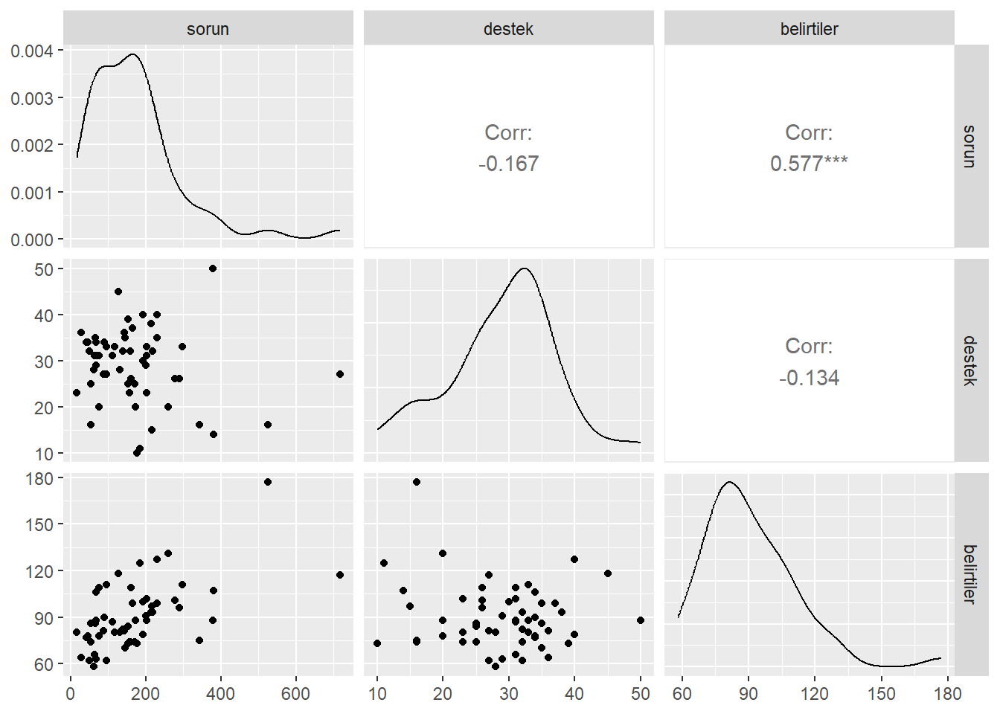
Destek, sorun veya belirtiler ile ilişkili olmamasına rağmen, beklendiği gibi, sorun ve belirtiler arasında istatistiksel olarak bir ilişki vardır (r = 0, 577).
Ancak bu bulgular sorun ve belirtiler arasındaki ilişkinin destek düzeyine bağlı olup olmadığı sorusuna cevap vermemektedir. Sorun ve destek etkileşimini test etmek için sorun değerleri ile destek değerlerinin çarpımıyla yeni bir değişken olusturulur.
Ancak bu iki değişkene ilişkin değerlerin çarpılmasıyla oluşan değişkenin analize dahil edilmesinde iki problem ortaya çıkacaktır.
Sorun veya Destek değişkenlerinden biri veya ikisi, çarpımlarıyla oluşan değişken ile yüksek düzeyde korelasyona sahip olacaktır ki bu da veride çoklu bağlantı problemine neden olacaktir.
Regresyon analizinde sorun veya destek değişkeninin herhangi bir etkisi diğer değişkenin değerinin 0 olduğu durumda değerlendirilecektir. diğer bir ifadeyle, sorun üzerindeki test hiç sosyal desteği olmayan bir katılımcı için Sorunların belirtilerle ilişkili olup olmadığı testi olacaktır.
Benzer şekilde, destek üzerindeki test hiç sorunları olmayan katılımcılar için değerlendirilecektir.
Hem çoklu bağlantı problemi, hem de ana etkilerden birinin diğer ana etkinin uç değerinde değerlendirilmesi problemi istenmeyen durumlardır.
Bahsedilen problemlerle başa çıkmak için sorun değişkeni ve destek değişkeni merkezlenebilir.
Bunun için her bir değişkene ilişkin bireysel gözlemlerden ilgili değişkenin ortalaması çıkarılarak sapma puanları hesaplanacaktır.
zorluklar$csorun <- zorluklar$sorun -mean(zorluklar$sorun)
zorluklar$cdestek <- zorluklar$destek -mean(zorluklar$destek)
zorluklar$cross <- zorluklar$sorun*zorluklar$destek
zorluklar$cross_m <- zorluklar$csorun*zorluklar$cdestekdeğişkenler merkezlendikten sonra merkezlenen sorun değişkeni için 0 değeri sorun değişkeninin ortalama düzeyindeki katılımcıları temsil ederken, merkezlenen destek değişkeni için 0 değeri destek değişkeninin ortalama düzeyindeki katılımcıları temsil eder.
Böylece ana etkiler diğer değişkenin uygun düzeyinde değerlendirilir.
Değişkenlerin merkezlenmesiyle sorun ve destek değişkenleri arasındaki çoklu bağlantı da önemli ölçüde düşecektir.
Merkezlenen sorun, Merkezlenen destek, Merkezlenen sorun değişkeninin değerleri ile Merkezlenen Destek değişkeninin değerlerinin çarpılmasıyla elde edilen etkileşim terimi ve Belirtiler arasındaki korelasyon matrisi incelenir.
ggpairs(zorluklar[,c(2:4,7)])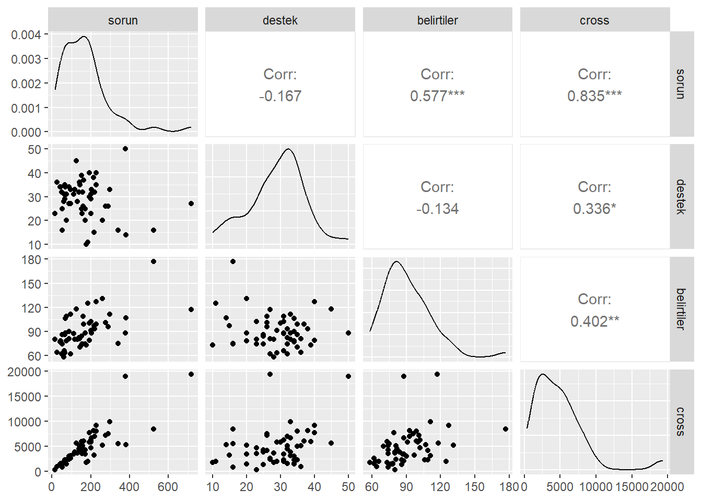
ggpairs(zorluklar[,c(5,6,4,8)])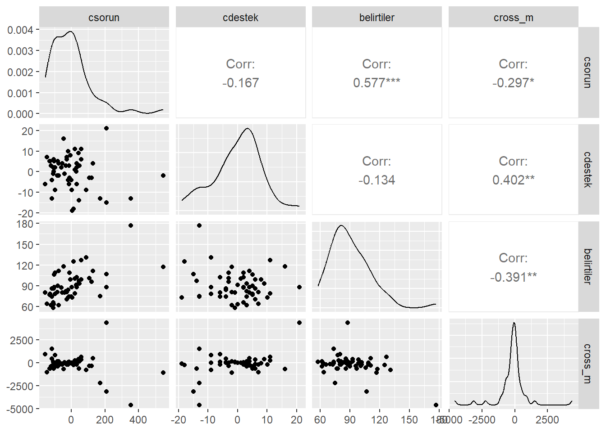
- Belirtilerin bağımlı degişken, merkezlenen sorunların ve merkezlenen desteğin bağımsız değişken olarak modellendiğ regresyonda, iki bağımsız değişkenin etkileşimini incelemek üzere etkileşim terimi de regresyon modeline eklenir.
n_model <- lm(belirtiler ~ csorun + cdestek ,data=zorluklar)
cross_model <- lm(belirtiler ~ csorun + cdestek + cross_m ,data=zorluklar)- etkileşim teriminin açıklanan varyansı ne kadar değiştirdiğine bakalım.
glance(n_model)$r.squared[1] 0.3344622glance(cross_model)$r.squared[1] 0.3884955Etkileşimli modelin daha yüksek bir \(R^2\) değerine sahip olduğu açıktır. Bununla birlikte birden fazla açıklayıcı değişkene sahip modellerde model seçimi için \(R^2\) iyi bir fikir değildir, çünkü herhangi bir değişken moda eklendiğinde \(R^2\) artar.
model seçimi için (daha) objektif bir ölçü düzeltilmiş \(R^2\) dir, modele dahil edilen değişken sayısı için bir düzeltme uyguladığından, yeni değişken herhangi bir yeni bilgi sağlamıyorsa veya tamamen ilgisizse düzeltilmiş \(R^2\) artmaz. Bu da düzeltilmiş \(R^2\) çoklu regresyon modellerinde model seçimi için tercih edilebilir bir metriktir.
etkileşim teriminin düzeltilmiş \(R^2\) yi ne kadar değiştirdiğine bakalım.
glance(n_model)$adj.r.squared[1] 0.3093475glance(cross_model)$adj.r.squared[1] 0.3532164- \(R^2\) değeri yaklaşık 0.39 olup belirtilerdeki varyansın yaklaşık %39’unun doğrusal regresyon modeli tarafından açıklandığı anlamına gelmektedir.
tidy(cross_model)Hem merkezlenen sorun hem de etkileşim terimi istatistiksel olarak anlamlıdır (sırasıyla p ˂ 0.001 ve p = 0.037). Ancak merkezlenen destek istatistiksel olarak anlamlı değildir (p = 0.634). Destek değişkeni etkileşim teriminin hesaplanmasında yer aldığından, regresyon modelinde kalabilir.
Etkileşim etkisinin anlamını yorumlamak için değişkenler arasındaki ilişkilerin grafik ile gösterimi yardımcı olabilir. En basit çözüm sosyal desteğin sabit düzeyleri için zorluklar ve psikolojik belirtiler arasındaki ilişkiye bakmaktır.
Merkezlenen sosyal destek değişkeninin değerileri -21 ile +19 arasında değişmektedir. Bu değişken için düşük, orta ve yüksek değerleri temsil etmek üzere sırasıyla -15, 0 ve +15 değerleri seçilebilir.
library(dplyr)
zorluklar <- zorluklar %>% mutate(
cdestek_kat = case_when(
cdestek <= -15 ~ "dusuk",
cdestek >-15 & cdestek <15~ "orta",
cdestek >=15 ~ "yuksek",
)
)
zorluklar <- zorluklar %>% arrange(csorun)- yüksek düzeyde sosyal destek ile sorunlardaki artışlar psikolojik belirtilerde küçük artışlarla ilişkilendirilirler. Orta düzeyde sosyal destek ile sorunlardaki artışlar psikolojik belirtilerde daha büyük artışlarla ilişkilendirilir. Düşük düzeyde sosyal destek ile sorunlardakı artışlar psikolojik belirtilerde dramatik artışlarla ilişkilendirilir.
24 Kaynaklar
- Wagner, B. M., Compas, B. E., & Howell, D. C. (1988). Daily and major life events: A test of an integrative model of psychosocial stress. American Journal of Community Psychology, 16 (2), 189-205.